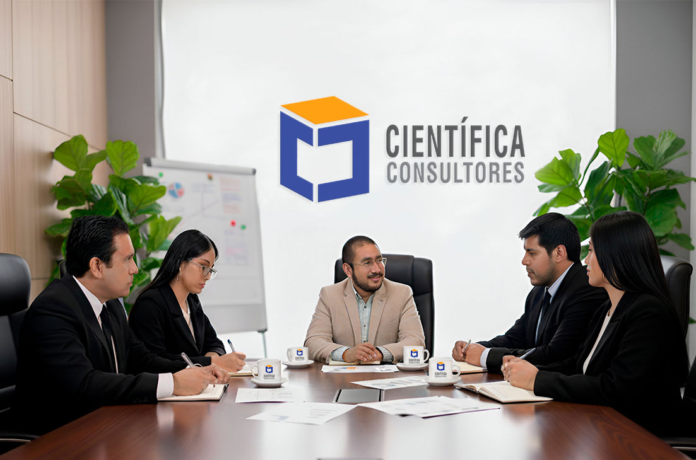

En Científica Consultores ofrecemos asesoría de tesis online con especialistas en investigación para estudiantes de distintos niveles académicos: pregrado, licenciatura, grado, maestría y doctorado. Te apoyamos en metodología, análisis, estructura y redacción académica, adaptándonos a los criterios de universidades de Latinoamérica, España y la comunidad hispanohablante en Estados Unidos. Trabajamos según la terminología académica de cada país —tesis, trabajo de grado, tesina, TFG o TFM— y te guiamos paso a paso para que avances con seguridad y presentes un proyecto sólido y bien fundamentado.
Nuestros Servicios de Asesoría para Tesis y Trabajos Académicos
Nuestros servicios están orientados a facilitar el desarrollo de tu investigación desde cero, sea un proyecto de tesis o cualquier otro trabajo académico. Te ayudamos a definir el tema, organizar la literatura, diseñar el enfoque metodológico, procesar los datos y preparar la versión final del documento. Cada asesoría se adapta al tipo de estudio que estés realizando —tesis, tesina, trabajo de grado, TFG o TFM— y a los lineamientos específicos de tu universidad, para que avances con un proceso claro y una guía académica personalizada.
Recibe acompañamiento personalizado de un asesor de tesis con experiencia en proyectos de pregrado, licenciatura y grado. Te guiamos en la elección del tema, la elaboración del marco teórico, la definición del enfoque metodológico y la redacción del documento final. Nos adaptamos a los lineamientos de tu universidad y a las distintas denominaciones académicas —tesis, tesina o trabajo de grado— para que avances con claridad y presentes un estudio sólido y bien estructurado.
Un asesor de tesis con experiencia en investigación de posgrado te acompaña en todas las etapas de tu tesis de maestría. Te ayudamos a elaborar un marco teórico sólido, definir el enfoque metodológico, realizar análisis cualitativos o cuantitativos y redactar cada capítulo con claridad académica. Esta asesoría está adaptada para programas de maestría en Latinoamérica, España y la comunidad hispana en Estados Unidos.
Un asesor de tesis doctoral con experiencia en investigación avanzada te acompaña en el diseño del estudio, la construcción teórica, el análisis cualitativo o cuantitativo profundo y la argumentación académica necesaria para sustentar tu tesis. Te apoyamos en la elaboración de la propuesta doctoral, el desarrollo de capítulos, artículos o manuscritos publicables, garantizando un trabajo riguroso, coherente y alineado a los estándares de programas internacionales de doctorado.
Recibe apoyo especializado para la elaboración de artículos científicos y manuscritos académicos orientados a revistas indexadas. Te guiamos en la estructura IMRyD, la revisión de literatura, el diseño metodológico, el análisis riguroso de resultados y la redacción precisa según normas internacionales. Un asesor académico te ayuda a fortalecer la calidad del paper, optimizar la argumentación y preparar tu artículo para procesos de arbitraje, indexación o presentación en congresos científicos.
Recibe apoyo especializado para la elaboración de tu Trabajo de Suficiencia Profesional (TSP) con la guía de un asesor académico. Te orientamos en la estructura del documento, el análisis aplicado, la argumentación, la metodología y la redacción final. Nos adaptamos a diferentes formatos institucionales —informe profesional, estudio de caso, proyecto aplicado o reporte técnico— para que presentes un trabajo claro, bien organizado y alineado a los requisitos académicos de tu programa.
Te apoyamos en la elaboración de tu proyecto de tesis, definiendo objetivos claros, el planteamiento del problema, la justificación, la metodología y el diseño de la investigación. Todo el proceso se desarrolla con acompañamiento personalizado para que presentes un proyecto sólido y aprobado sin observaciones.
Recursos Académicos para tu Proyecto y Desarrollo de Tesis
Aquí encontrarás recursos académicos diseñados para fortalecer tu proceso de investigación y desarrollar tu proyecto de tesis con claridad. Te explicamos cómo elaborar un proyecto de tesis paso a paso, la estructura de un trabajo académico, las diferencias entre tesis, tesina, trabajo de grado y trabajo de suficiencia profesional (TSP), y cómo avanzar de manera organizada en cada etapa. Estos recursos están pensados para estudiantes de pregrado, maestría, doctorado y programas internacionales de habla hispana, proporcionándote bases metodológicas sólidas y guías esenciales para tu estudio.
Aprende las etapas fundamentales para construir un proyecto de tesis sólido: formulación del tema, objetivos, problema de investigación, marco teórico y metodología. Esta guía te ayudará a organizar tu propuesta con claridad y de acuerdo con estándares académicos internacionales. , visita nuestro artículo: Cómo hacer tu proyecto de tesis
Conoce la estructura general de una tesis o trabajo de grado, incluyendo introducción, marco teórico, metodología, resultados, discusión y conclusiones. Te orientamos sobre qué debe llevar cada sección para que redactes un documento coherente y bien organizado.
Conoce las diferencias entre una tesis y un trabajo de suficiencia profesional, incluyendo objetivos, nivel de investigación, metodología y tipo de entrega. Esta guía te permite elegir el formato adecuado según los requisitos de tu programa académico. Visita nuestro artículo: Tesis vs trabajo de suficiencia profesional
Comprende las diferencias entre tesis, tesina, TFG, TFM y trabajo de grado. Cada país y universidad utiliza denominaciones distintas, pero todas comparten elementos en común. Esta guía te ayudará a identificar qué tipo de trabajo necesitas presentar según tu programa académico.
Descubre recomendaciones prácticas para organizar tu tiempo, superar bloqueos, mejorar tu redacción y mantener un ritmo constante en tu investigación. Estos consejos te ayudarán a avanzar con seguridad y evitar retrasos en tu proyecto académico.
Clientes
Eventos Realizados
Proyectos Ejecutados

CONOZCA MÁS SOBRE NUESTRA EMPRESA
¿POR QUÉ ELEGIRNOS?
Contamos con un equipo multidisciplinario de profesionales especializados y más de 10 años de experiencia, garantizando tu satisfacción en cada servicio de asesoría. Somos tu socio en la investigación.
100% Confidencialidad
Garantizamos la máxima confidencialidad en todos nuestros servicios de asesoría de tesis. Toda la información de tu proyecto académico se maneja de manera privada y segura, asegurando que tus ideas, datos y documentos estén protegidos durante todo el proceso.
Anti Plagio
Todos los trabajos que apoyamos son originales y libres de plagio. Nuestros asesores utilizan metodologías rigurosas y herramientas académicas para garantizar que cada tesis, tesina o trabajo de suficiencia profesional sea auténtico, cumpliendo con los estándares internacionales de investigación.
Flexibilidad
Accede a asesoría online con horarios flexibles, adaptados a tus necesidades desde cualquier lugar.
Velocidad de Entrega
Entendemos la importancia de los plazos académicos. Por eso, nos comprometemos a entregar avances y revisiones de manera rápida y eficiente, sin comprometer la calidad ni el rigor académico de tu proyecto.
Equipo Integral
Equipo multidisciplinario de profesionales expertos en diversas áreas científicas, comprometidos con tu éxito.
Asesoría Académica de Alta Calidad para Tesis, Tesinas y Trabajos de Grado
Ofrecemos asesoría académica de alta calidad para estudiantes que desarrollan tesis, tesinas y trabajos de grado en cualquier nivel académico. Nuestro equipo de expertos te acompaña en cada etapa del proceso, desde la planificación del proyecto y la investigación metodológica hasta la redacción final, asegurando un trabajo riguroso, coherente y alineado con los estándares académicos internacionales.
Acompañamiento Especializado para Tesis en Todos los Niveles Académicos
Ofrecemos acompañamiento especializado para estudiantes de pregrado, maestría y doctorado que buscan avanzar con seguridad en el desarrollo de su tesis. Nuestro equipo de asesores te brinda orientación metodológica, revisión académica y apoyo en cada etapa del proceso, con atención personalizada y soporte online para estudiantes de habla hispana en todo el mundo, garantizando un servicio accesible, claro y de alta calidad académica.
Herramientas Profesionales que Respaldan tu Asesoría de Tesis y Proyecto de Grado
En Científica Consultores utilizamos herramientas profesionales como Turnitin, Mendeley, Atlas.ti y SPSS para respaldar tu asesoría de tesis y proyecto de grado. Nuestro objetivo es garantizar la originalidad, el rigor metodológico y la calidad académica en cada etapa, apoyando a estudiantes de habla hispana en todo el mundo en el desarrollo de tesis, tesinas y trabajos académicos de manera ética y confiable.
Detección de Plagio con Turnitin
Turnitin garantiza la originalidad de tu tesis o proyecto de grado, detectando plagio y asegurando una investigación auténtica y confiable.

Gestión Bibliográfica con Mendeley
Mendeley organiza referencias y bibliografía, facilitando la recolección de ideas, tesis y trabajos académicos con citas precisas.

Análisis Cualitativo con Atlas.ti
Atlas.ti permite analizar datos cualitativos de forma rigurosa, apoyando la elaboración de tesis y proyectos académicos complejos.

Análisis Cuantitativo con SPSS
SPSS realiza análisis estadísticos precisos, asegurando resultados cuantitativos confiables en tu proyecto de grado o asesoría de tesis.

¿Cómo Trabajamos?
Te explicamos paso a paso cómo trabajamos para que tu asesoría de tesis o proyecto de grado sea clara, organizada y eficiente. Nuestro proceso está diseñado para brindar apoyo integral, garantizar calidad académica y adaptarse a tus necesidades específicas, desde la planificación hasta la entrega final.
Te contactas con nosotros
Nos escribes por WhatsApp, correo o formulario web. Nos comentas tu universidad, tipo de trabajo académico y fechas de entrega para entender tu caso desde el inicio.
Selección del tipo de trabajo
Escoges si deseas trabajar tesis, proyecto de grado, tesina, TFG, TFM o trabajo de suficiencia profesional. Te ayudamos a elegir la opción adecuada según tu nivel académico.
Diagnóstico del proyecto
Analizamos tu tema, avances y requisitos del reglamento. Detectamos fortalezas, riesgos y ajustes necesarios para planificar una ruta de trabajo realista.
Presupuesto personalizado
Te enviamos una propuesta económica alineada a la complejidad de tu tesis o proyecto de grado, indicando alcances, entregables y forma de pago.
Contrato y formalización
Formalizamos el servicio con un contrato digital que asegura confidencialidad, cumplimiento de plazos y la calidad del trabajo académico contratado.
Asignación de asesor especializado
Te asignamos un asesor experto en tu área. Coordinarás entregas, revisiones y observaciones de cada capítulo, con acompañamiento personalizado hasta la defensa.
Preguntas Frecuentes
Encuentra respuestas claras a las dudas más comunes antes de iniciar tu proyecto académico.
Un asesor o tutor de tesis es un profesional experto que guía a los estudiantes en el desarrollo de su proyecto académico, incluyendo tesis, tesinas y trabajos de grado. Su función es orientar en la elección del tema, diseño metodológico, análisis de datos y redacción, asegurando un proceso organizado, ético y con estándares académicos internacionales.
El precio de la asesoría de tesis o artículo científico varía según la complejidad del trabajo, el nivel académico y los servicios requeridos. Nuestro objetivo es ofrecer un presupuesto transparente y adaptado a tus necesidades, garantizando calidad y apoyo personalizado en cada etapa de tu investigación.
Nuestro servicio se adapta a tus necesidades: puedes recibir asesoría de tesis de manera presencial o totalmente online. Esto permite a estudiantes de cualquier país de habla hispana acceder a nuestro acompañamiento académico sin importar la ubicación, manteniendo la misma calidad y atención personalizada.
La duración de la asesoría depende del tipo de trabajo, el nivel académico y el ritmo de avance del estudiante. Podemos ajustar las sesiones y tiempos de revisión a tus necesidades, asegurando que cada fase de tu tesis, tesina o artículo científico se complete de manera efectiva y dentro del plazo requerido.
Nuestra asesoría profesional incluye orientación en la elección del tema, revisión de literatura, diseño metodológico, análisis de datos, redacción académica y preparación de entregables finales. También brindamos apoyo para cumplir con los estándares de tu universidad y requisitos de publicaciones científicas internacionales.
Sí, nuestros asesores o tutores especializados te apoyan en levantar y corregir observaciones de tu tesis o proyecto de investigación. Te ayudamos a mejorar redacción, análisis y estructura, asegurando que tu trabajo cumpla con los criterios académicos y estándares internacionales.